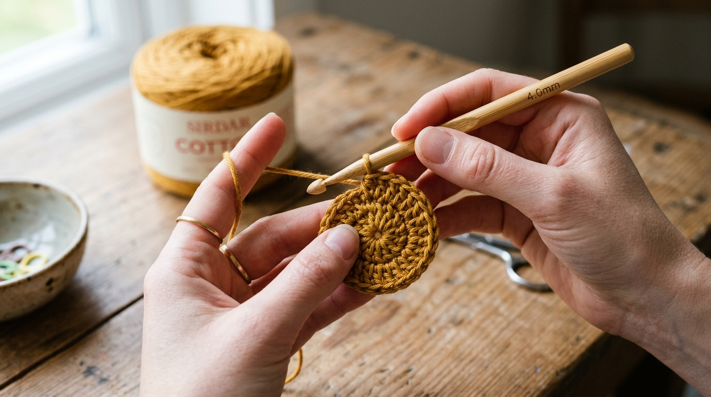
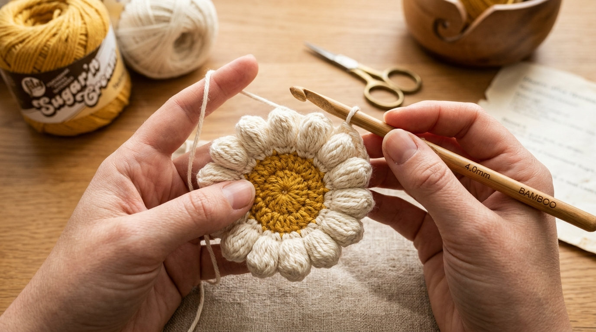
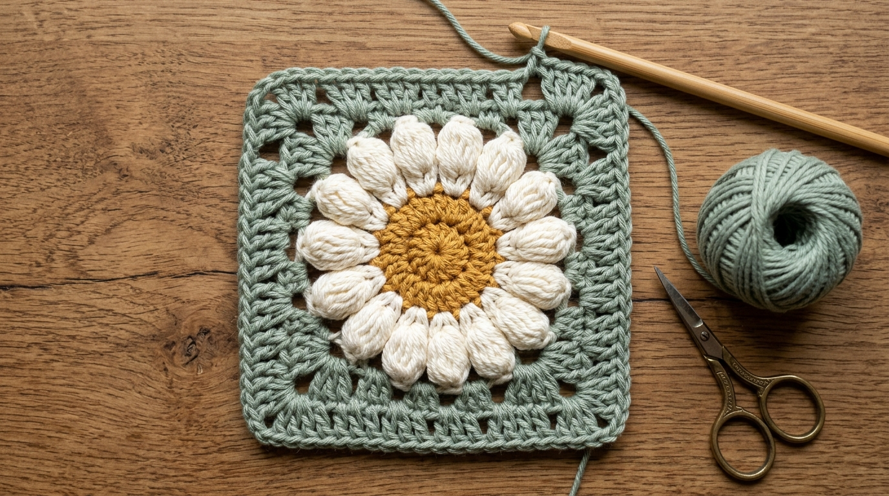
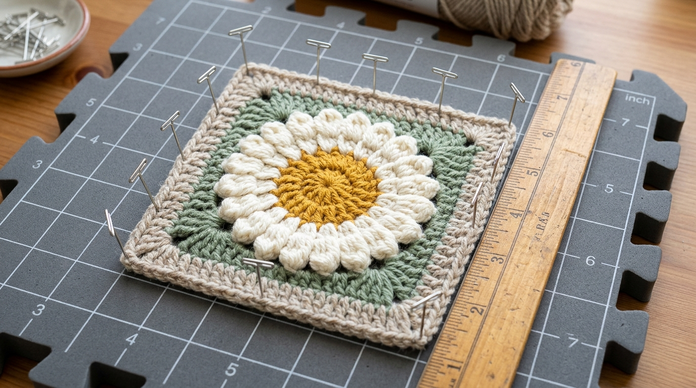

"सर्दियों की एक शांत शाम में हाथ में लकड़ी का क्रोशिया हुक थामने का अपना एक ध्यानमग्न सुकून होता है। जब हर फंदे के साथ एक सपाट धागा धीरे-धीरे खिलते हुए फूल का रूप लेने लगता है।"
साधारण ग्रैनी स्क्वायर (जो केवल सपाट डबल क्रोशिया से बनते हैं) भले ही आसान हों, लेकिन उनमें वो गहराई और जीवंतता नहीं होती। यह 3D पॉप-अप डेज़ी ग्रैनी स्क्वायर पारंपरिक बुनाई को एक सुंदर कला में बदल देता है। इसमें फूल की बारह पंखुड़ियां बिल्कुल सपाट नहीं रहतीं, बल्कि पॉपकॉर्न स्टिच (Popcorn Stitch) की मदद से आगे की ओर उभरकर एक मनमोहक थ्री-डायमेंशनल रूप ले लेती हैं।
चाहे आप अपनी सुबह की चाय के लिए एक खूबसूरत कप मैट बनाना चाहते हों, या एक शानदार विंटेज टोट बैग या सर्दियों के कुशन के लिए कई चौकोर टुकड़े तैयार करना चाहते हों—यह गाइड आपको फंदों की सही गिनती, रंगों के चुनाव और सटीक कोनों की पूरी स्पष्ट विधि सिखाएगी।
इस गाइड की मुख्य सामग्री
- ज़रूरी सामग्री, रंग और पैटर्न का विवरण
- टांकों की शब्दावली और 3D पॉपकॉर्न तकनीक
- राउंड 1: बीच का पीला गोल केंद्र (Magic Ring)
- राउंड 2: उभरी हुई 3D पॉपकॉर्न पंखुड़ियां
- राउंड 3: सेज ग्रीन से गोल फूल को चौकोर बनाना
- राउंड 4 और 5: ओटमील फ्रेम और साफ किनारा
- वेट ब्लॉकिंग (Wet Blocking) का जरूरी तरीका
- डेज़ी ग्रैनी स्क्वायर्स से बनने वाले प्रोजेक्ट्स
- अक्सर पूछे जाने वाले सवाल (FAQs)
ज़रूरी सामग्री, रंग और पैटर्न का विवरण
| कठिनाई स्तर | शुरुआती से मध्यम (Confident Beginner to Intermediate) — यदि आपको डबल क्रोशिया और मैजिक रिंग का बुनियादी ज्ञान है, तो यह बेहद आसान लगेगा। |
| तैयार आकार | ब्लॉकिंग के बाद 4.5 इंच × 4.5 इंच (11.5 सेमी × 11.5 सेमी) चौकोर। |
| धागे का प्रकार | 100% मरसराइज्ड कॉटन (Mercerized Cotton) या कॉटन-एक्रिलिक ब्लेंड (DK या Light Worsted weight, लगभग 50 ग्राम में 120 मीटर)। सूती धागा पंखुड़ियों को ढीला नहीं पड़ने देता। |
| हुक का आकार | 4.0 मिमी (US G/6) लकड़ी या एल्यूमीनियम का क्रोशिया हुक। |
| अन्य सामान | ऊन वाली सुई (Tapestry needle), बारीक कैंची, ब्लॉकिंग बोर्ड और जंग-मुक्त टी-पिंस (T-pins)। |
| शब्दावली | मानक US क्रोशिया टर्म्स। |
प्राकृतिक और सौम्य रंग संयोजन (Color Palette)
एक शांत, सुकून भरे भारतीय घर के अनुकूल हमने चार खूबसूरत और सौम्य रंगों का चुनाव किया है:
टांकों की शब्दावली और 3D पॉपकॉर्न तकनीक
इस पैटर्न में निम्नलिखित मानक टांकों का उपयोग किया गया है:
- ch — चेन (Chain)
- sl st — स्लिप स्टिच (Slip Stitch - फंदे को जोड़ना)
- sc — सिंगल क्रोशिया (Single Crochet)
- hdc — हाफ डबल क्रोशिया (Half Double Crochet)
- dc — डबल क्रोशिया (Double Crochet)
- tr — ट्रेबल क्रोशिया (Treble Crochet - दो बार धागा लपेटकर बनाया जाने वाला ऊंचा टांका)
- sp — स्पेस या चेन स्पेस
3D पॉपकॉर्न स्टिच (Popcorn Stitch) कैसे बनाएं
- एक ही फंदे के भीतर 5 डबल क्रोशिया (dc) बनाएं।
- क्रोशिया हुक को चालू लूप से सावधानी से निकाल लें (लूप को थोड़ा ढीला छोड़ें ताकि वह खुले नहीं)।
- हुक को उन 5 टांकों में से सबसे पहले डबल क्रोशिया के ऊपर दोनों लूप्स में आगे से पीछे की तरफ डालें।
- अब ढीले छूटे हुए लूप को हुक में फंसाएं और पहले टांके के बीच से खींचकर आगे निकाल लें।
- पॉपकॉर्न को मजबूती से बंद करने के लिए 1 चेन (ch 1) बनाएं।
नतीजा: वो पांचों टांके आपस में सिमटकर एक गोल कप की तरह आगे की ओर उभर आते हैं—यही 3D पंखुड़ी का सच्चा राज है!
स्टेप-बाय-स्टेप ट्यूटोरियल और पैटर्न
बीच का पीला गोल केंद्र (Magic Ring)

धागा: रंग A (सरसों पीला / Golden Ochre)
- धागे से एक मैजिक रिंग (Magic Ring) बनाएं (वैकल्पिक: 4 चेन बनाकर पहले फंदे में स्लिप स्टिच से गोला बनाएं)।
- 2 चेन (ch 2) बनाएं (यह टांके की गिनती में नहीं आता, केवल ऊंचाई देने के लिए है)।
- मैजिक रिंग के अंदर 12 डबल क्रोशिया (dc) बनाएं।
- पीछे छूटे धागे को धीरे से लेकिन कसकर खींचें ताकि बीच का छेद पूरी तरह बंद हो जाए।
- सबसे पहले वाले डबल क्रोशिया की चोटी में sl st लगाकर गोला बंद करें।
- रंग A को काटकर धागा पक्का कर लें और अतिरिक्त धागे को पीछे की तरफ सिल लें।
राउंड 1 फंदों की गिनती: ठीक 12 डबल क्रोशिया।
उभरी हुई 3D पॉपकॉर्न पंखुड़ियां (Cream Petals)

धागा: रंग B (प्राकृतिक क्रीम / Natural Cream)
- घेरे के किसी भी फंदे में रंग B को स्लिप स्टिच से जोड़ें।
- पहली पंखुड़ी: 3 चेन बनाएं (यह पहला dc माना जाएगा), उसी फंदे में 4 डबल क्रोशिया और बनाएं (कुल 5 dc)। हुक निकालें, शुरुआती चेन-3 की तीसरी चेन में आगे से पीछे डालें, लूप खींचें और 1 चेन से लॉक करें। इसके बाद 2 चेन (ch 2) बनाएं।
- बाकी 11 पंखुड़ियां: अगले प्रत्येक फंदे में बनाएं: 1 पॉपकॉर्न स्टिच, फिर ch 2।
- पहले पॉपकॉर्न के पिछले हिस्से पर बने लॉकिंग लूप में sl st लगाकर राउंड जोड़ें।
- रंग B को काटकर अलग कर लें।
राउंड 2 फंदों की गिनती: ठीक 12 पॉपकॉर्न पंखुड़ियां और 12 चेन-2 स्पेस।
सेज ग्रीन से गोल फूल को चौकोर बनाना

धागा: रंग C (हल्का सेज ग्रीन / Muted Sage)
गणित की समझ: फूल के चारों तरफ 12 चेन-2 स्पेस हैं। चौकोर आकार बनाने के लिए 4 स्पेस कोनों में बदलेंगे और बाकी 8 स्पेस 4 सपाट भुजाएं बनाएंगे (हर तरफ 2 स्पेस)। कोनों में ऊंचे ट्रेबल क्रोशिया (tr) और किनारों पर डबल क्रोशिया (dc) की ऊंचाई का अंतर गोल वृत्त को चौकोर बना देता है।
- पंखुड़ियों के बीच किसी भी ch-2 sp में रंग C जोड़ें।
- पहला कोना: 4 चेन बनाएं (पहला tr), उसी जगह 2 ट्रेबल क्रोशिया, 2 चेन, फिर 3 ट्रेबल क्रोशिया बनाएं → (3 tr, ch 2, 3 tr)।
- पहली भुजा: अगले चेन-2 स्पेस में 3 डबल क्रोशिया (3 dc) बनाएं। फिर उसके अगले स्पेस में भी 3 डबल क्रोशिया (3 dc) बनाएं।
- दूसरा कोना: अगले स्पेस में कोना बनाएं → (3 tr, ch 2, 3 tr)।
- दूसरी भुजा: अगले दो स्पेस में 3-3 डबल क्रोशिया बनाएं।
- यही क्रम दोहराते हुए तीसरा और चौथा कोना और भुजाएं पूरी करें।
- शुरुआती 4-चेन की चौथी चेन में sl st से जोड़ें और धागा काट लें।
राउंड 3 फंदों की गिनती: 4 कोने (प्रत्येक में 6 tr और ch-2) + 8 साइड क्लस्टर (प्रत्येक में 3 dc)। कुल 48 टांके।
ओटमील फ्रेम और साफ किनारा
धागा: रंग D (ओटमील बेज / Oatmeal Beige)
राउंड 4 (सॉलिड फ्रेम):
- किसी भी कोने के ch-2 sp में रंग D जोड़ें।
- कोना: 3 चेन, उसी स्पेस में (2 dc, ch 2, 3 dc) बनाएं।
- भुजा: किनारे पर मौजूद तीनों खाली स्पेस में 3-3 डबल क्रोशिया (3 dc) बनाएं।
- चारों तरफ [कोना, भुजा] क्रम दोहराएं और पहले चेन-3 की चोटी में स्लिप स्टिच से जोड़ें।
राउंड 5 (साफ किनारा / बॉर्डर):
- 1 चेन बनाएं, किनारे के प्रत्येक डबल क्रोशिया के ऊपर 1 सिंगल क्रोशिया (sc) बनाते जाएं।
- प्रत्येक कोने के चेन-2 स्पेस में बनाएं: (1 sc, ch 2, 1 sc)।
- पहले सिंगल क्रोशिया में जोड़ें, धागा काटें और पीछे की तरफ सुई से सारे बचे धागों को छुपा दें।
ब्लॉकिंग से पहले आकार: लगभग 4.25 इंच चौकोर।
वेट ब्लॉकिंग (Wet Blocking) का जरूरी तरीका

कई लोग ब्लॉकिंग को नजरअंदाज कर देते हैं। लेकिन एक 3D फ्लोरल ग्रैनी स्क्वायर के लिए ब्लॉकिंग ही वह जादुई कदम है जो साधारण बुनाई को एक सलीकेदार, पेशेवर कलाकृति में बदल देता है:
- हल्का गीला करें: तैयार चौकोर टुकड़े को गुनगुने पानी में 5 मिनट के लिए भिगोएं, फिर दो तौलियों के बीच रखकर हल्के हाथ से दबाएं (कभी मरोड़ें या निचोड़ें नहीं)। या स्प्रे बोतल से अच्छी तरह पानी छिड़कें।
- बोर्ड पर पिन लगाएं: फोम ब्लॉकिंग मैट पर चौकोर टुकड़े को रखें। स्टेनलेस स्टील टी-पिंस की मदद से चारों कोनों को 90 डिग्री के सीधे कोण पर नापकर (4.5 इंच) पिन लगाएं। हर सीधी भुजा पर 2-3 पिंस और लगाएं।
- पंखुड़ियों को संवारें: जब धागा गीला हो, अपनी उंगलियों से सभी 12 क्रीम पॉपकॉर्न पंखुड़ियों को आगे की तरफ हल्का सा उभारें ताकि वे खिलती हुई दिखें।
- पूरी तरह सूखने दें: इसे 12 से 18 घंटे के लिए हवादार जगह पर सूखने दें। पिंस निकालते ही कॉटन यार्न अपने इस चौकोर और सटीक आकार को हमेशा के लिए संभाल कर रखेगा।
डेज़ी ग्रैनी स्क्वायर्स से बनने वाले सुंदर प्रोजेक्ट्स
एक बार जब आप इस एक टुकड़े को बना लेते हैं, तो आप घर की सजावट और रोजमर्रा के उपयोग के कई खूबसूरत प्रोजेक्ट्स तैयार कर सकते हैं:
टी मग रग (Tea Mug Rug)
केवल 1 चौकोर टुकड़ा आपकी सुबह की अदरक वाली चाय के कप के लिए एक बेहद सुंदर और हीट-रेसिस्टेंट कोस्टर बन जाता है।
डेज़ी सोफा कुशन कवर
16 टुकड़ों (4 × 4) को आपस में जोड़कर 18 इंच का एक विंटेज फ्लोरल कुशन कवर तैयार किया जा सकता है।
कॉटन टोट बैग (Tote Bag)
13 टुकड़ों को क्लासिक फ्रेंच मार्केट टोट बैग के आकार में जोड़कर किताबें या बुनाई का सामान रखने का मजबूत बैग बनाएं।
विंटर लैप ब्लैंकेट (Thow)
35 से 48 चौकोर टुकड़ों को जोड़कर सर्दियों की शाम में ओढ़ने के लिए एक बेहद आरामदायक और टिकाऊ ब्लैंकेट बनाएं।
अक्सर पूछे जाने वाले सवाल (FAQs)
स्नेह के साथ लिखा गया: Sidhu's Views
धीमी जीवनशैली, हाथ की बुनाई, सलीकेदार घर और रचनात्मक कलाओं की खूबसूरत दुनिया।